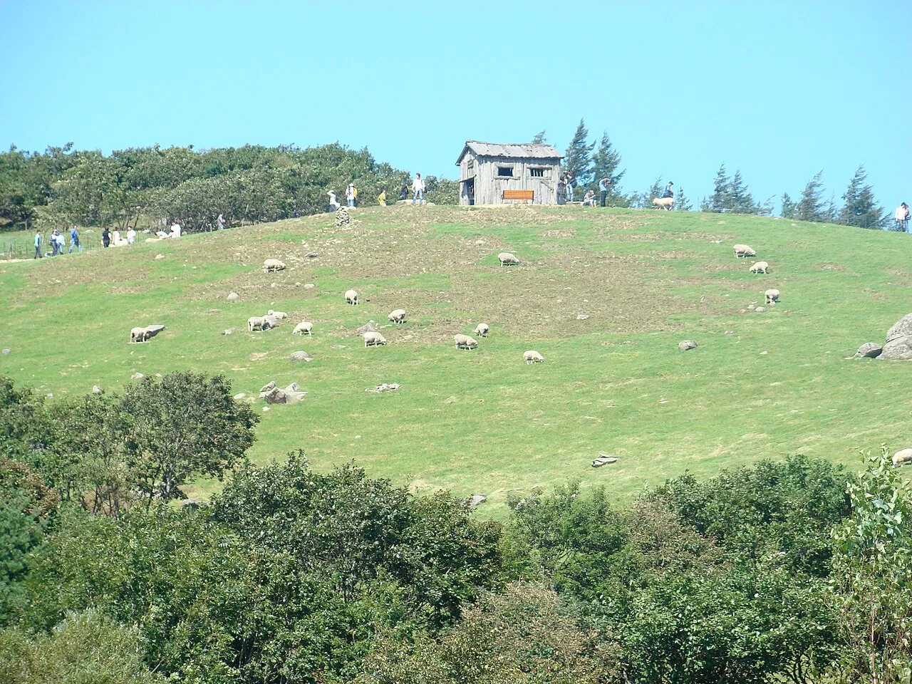
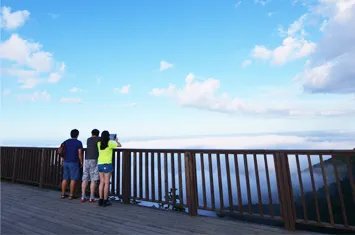
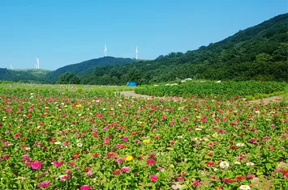
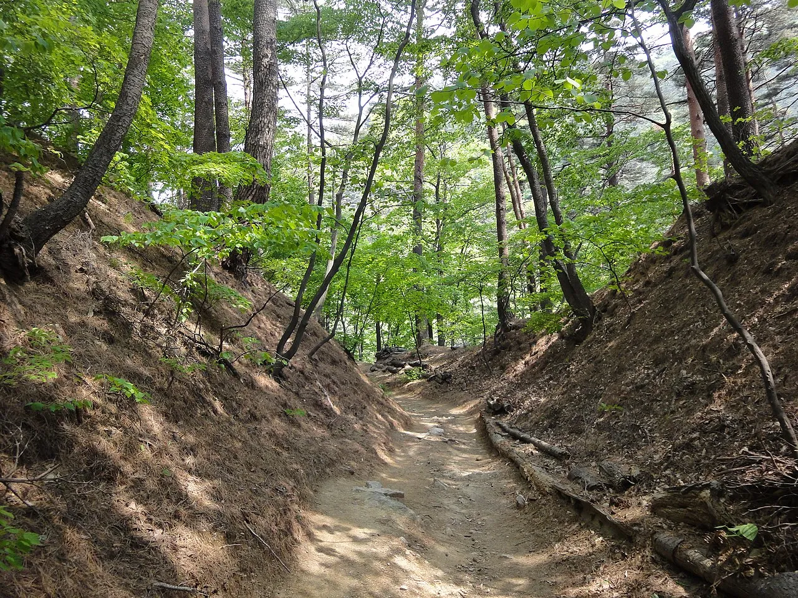

▲ 삼양라운드힐의 대표 포토 스폿 '연애소설나무'. 영화 '연애소설' 촬영지로, 뒤로 능선을 따라 늘어선 풍력발전기가 함께 보인다 ⓒ 삼양라운드힐
강원 평창군 대관령면, 해발 800m 안팎의 고원지대에 자리한 삼양목장(현 삼양라운드힐)은 1972년 조성 이래 600만 평(약 1980만㎡)에 이르는 국내 최대 유기초지 목장이다. 서울 여의도 면적의 7배가 넘는 규모라, 걸어서 전체를 둘러보는 건 사실상 불가능하다. 대신 전망대 능선을 따라 늘어선 대형 풍력발전기와 그 아래로 펼쳐지는 초원이 이 목장의 상징적인 풍경을 만든다. 2011년부터는 자연 방목 방식의 유기 축산을 시작하며 '에코그린캠퍼스'라는 별칭도 얻었다. 이 기사는 목장 규모와 풍력발전기, 셔틀버스 운행, 입장료·주차, 가을 풍경까지 방문 순서대로 정리했다.
1. 삼양목장은 어떤 곳인가 — 국내 최대 유기초지

▲ 삼양라운드힐 동해전망대. 해발고지 능선 위에 세워진 목조 전망대로, 날씨가 맑으면 동해까지 조망할 수 있다 ⓒ 삼양라운드힐
삼양목장은 원래 삼양식품 계열의 목장으로 출발해 낙농·사료용 초지로 관리되다가, 현재는 '삼양라운드힐'이라는 이름으로 관광지형 목장을 함께 운영하고 있다. 국내에서 가장 넓은 민간 목장으로 꼽히며, 완만하게 이어지는 능선과 초원이 계절마다 다른 색을 낸다. 봄~여름에는 초록빛 초지가, 가을에는 억새와 단풍이, 겨울에는 온통 눈으로 덮인 설원이 펼쳐져 사계절 내내 방문객이 꾸준한 곳으로 알려져 있다.
2. 풍력발전기 — 초원 위에 늘어선 대형 발전 시설

▲ 동해전망대에서 내려다본 운해. 고원지대 특유의 확 트인 조망이 이 목장의 대표적인 매력이다 ⓒ 삼양라운드힐
삼양목장 전망대 부근에는 대형 풍력발전기가 여러 기 설치돼 있어, 초록 또는 하얀 초원 위로 거대한 흰색 터빈이 천천히 돌아가는 모습이 이 목장의 대표 이미지로 자리 잡았다. 이 발전기들은 강릉 지역 전력 수요의 상당 부분을 공급하는 것으로 알려져 있다. 대관령 일대는 연중 바람이 강하게 부는 지형적 특성 때문에 풍력발전 단지가 여러 곳에 조성돼 있으며, 삼양목장 역시 그 능선의 일부를 이룬다. 탁 트인 초원과 거대한 하얀 터빈이 대비를 이루는 풍경은 방문객들이 가장 많이 사진으로 남기는 장면이다.
3. 셔틀버스 운행 — 그린시즌과 화이트시즌
목장 규모가 워낙 커서 도보 관람만으로는 한계가 있다. 이 때문에 삼양목장은 계절에 따라 이동 수단을 다르게 운영한다. 그린시즌(4~11월)에는 매표소에서 약 100m 안쪽 광장의 정류장에서 출발하는 셔틀버스가 운행되며, 정류장 어디서든 자유롭게 타고 내릴 수 있고 별도의 셔틀버스 이용료는 없다. 반면 화이트시즌(11월~이듬해 4월)에는 셔틀버스 대신 방문객이 직접 개인 차량을 몰고 목장 안 도로를 둘러보는 방식으로 바뀐다. 가을 억새·단풍 시즌은 그린시즌 막바지에 해당해, 셔틀버스를 이용해 능선 곳곳을 편하게 오갈 수 있는 마지막 시기이기도 하다.
| 구분 | 기간 | 이동 수단 | 개장시간 |
|---|---|---|---|
| 그린시즌 | 4월~11월 | 셔틀버스(무료, 자유 승하차, 주말 증차 운행) | 09:00~18:00(매표 마감 17:00) |
| 화이트시즌 | 11월~이듬해 4월 | 개인 차량으로 목장 내 도로 이용 | 09:00~17:30(매표 마감 16:30) |
입장료는 대인(만 19세 이상 대학생 포함) 1만 2000원, 소인(36개월 이상 초·중·고등학생) 1만 원, 우대(만 65세 이상·장애인 등) 9000원이다. 36개월 미만 유아, 중증 장애인, 생활보호대상자 학생, 평창군민은 무료 입장이며, 강원도민은 신분증을 지참하면 30% 할인을 받을 수 있다. 다만 시즌·프로모션에 따라 요금이 바뀔 수 있으므로 방문 전 공식 홈페이지나 고객센터(033-335-1966)를 통해 최신 요금을 확인하는 것이 정확하다.
4. 가을 풍경 — 억새와 단풍이 겹치는 시기

▲ 삼양라운드힐 '무지개 꽃밭' 산책로. 계절 꽃이 만개한 화단 뒤로 초원 능선과 풍력발전기가 함께 보인다 ⓒ 삼양라운드힐
대관령 고원지대는 가을이 되면 초지 사이사이 억새가 피어나고, 능선 낮은 곳의 활엽수들이 단풍으로 물들면서 초록·갈색·붉은색이 뒤섞인 독특한 색감을 낸다. 정상적인 단풍 명산처럼 붉은색으로 뒤덮이기보다는, 넓은 초원 위에 부분적으로 물든 나무들과 억새가 어우러지는 것이 대관령 가을 풍경의 특징이다. 정확한 억새·단풍 절정 시기는 해마다 다르므로 방문 직전 목장 공식 SNS나 홈페이지의 현장 소식을 확인하는 편이 좋다.
✅ 가을철 방문 시 참고할 점
· 가을은 그린시즌 막바지로 셔틀버스 이용이 가능한 마지막 시기
· 고원지대 특성상 평지보다 기온이 낮고 바람이 강해 가을에도 겉옷 필요
· 단풍·억새 절정 시기는 해마다 달라 방문 전 공식 채널 확인 권장
5. 드라마·영화 촬영지 이력
삼양목장은 확 트인 초원과 이국적인 풍경 덕분에 여러 영화·드라마의 배경으로 쓰였다. 드라마 '가을동화'에서 주인공들이 자전거를 타고 달리던 길이 이 목장 코스 중 하나로 알려져 있으며, 영화 '연애소설'에 등장한 나무가 있는 구간은 '사랑의 기억'이라는 이름의 포토 스폿으로 남아 있다. 이밖에도 국내 여러 영상물이 이 목장의 초원과 산책로를 배경으로 촬영된 것으로 소개된다. 방문 시 이런 촬영지 표지판을 따라 걸으면 단순한 산책 이상의 재미를 느낄 수 있다.
6. 이용 정보 정리
| 항목 | 내용 |
|---|---|
| 위치 | 강원 평창군 대관령면 (대관령 고원지대) |
| 규모 | 약 600만 평(약 1980만㎡), 국내 최대 민간 유기초지 목장 |
| 개장시간 | 5~10월 09:00~18:00(매표 마감 17:00) / 11~4월 09:00~17:30(매표 마감 16:30) |
| 입장료 | 대인 1만 2000원 / 소인 1만 원 / 우대 9000원(강원도민 30% 할인) |
| 이동수단 | 그린시즌(4~11월) 무료 셔틀버스 / 화이트시즌(11~4월) 개인 차량 |
| 문의 | 삼양라운드힐 고객센터 033-335-1966, 033-335-5044~5 |

▲ 삼양라운드힐 청연주목원. 주목나무 숲 사이 분수와 산책로가 조성돼 있어 목장 능선과는 다른 숲속 풍경을 즐길 수 있다 ⓒ 삼양라운드힐
정확한 입장료와 최신 프로모션 정보는 방문 전 공식 채널에서 다시 확인하는 것이 가장 안전하다.
삼양라운드힐 즐길거리 페이지에서 확인 가능✅ 대관령 삼양목장, 가기 전 체크리스트
· 1972년부터 조성된 600만 평 규모 국내 최대 유기초지 목장
· 전망대 능선의 풍력발전기가 상징적 풍경, 강릉 지역 전력 공급에 기여
· 그린시즌(4~11월)엔 무료 셔틀버스, 화이트시즌(11~4월)엔 개인 차량 이용
· 개장시간 5~10월 09:00~17:00, 11~4월 09:00~16:30
· 가을은 억새·단풍이 겹치는 시기이자 셔틀버스 이용 가능한 마지막 시즌
· 드라마 '가을동화', 영화 '연애소설' 등 다수 영상물 촬영지
· 정확한 입장료·프로모션은 방문 전 공식 홈페이지·고객센터로 재확인 권장